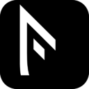

FeSidle
简介
一个来自6年研发经验，身处挪坑徘徊期，抚摸天花板度日的前端心声。
如何保值？如何深入?选择方向？沉淀技术？投身管理？...
手撸过全栈，玩转过PHP，研究过框架，折腾过Node，解决过功效，手撸过软件...
玩过掘金，玩过知乎，最终还是回到GitHub
低头忙碌工作，解决一个又一个的业务需求的同时，生怕落了技术
Now，Just be yourself
为时光留下你的脚印
让青春充满你的回忆
每一段高效的代码，都是从丑陋无比演变而来
Don't stop studying，享受coding，才是我们码农真正的快乐
Get
- 不存在系统而又完整的知识库（你可以Google or MDN）
- 这里没有框架，但可以拥有更多的Plugin
- 我们不造轮子，只造真空胎
- 这里没有大牛，因为我们不认为自己是大牛
- F？这有啥？这里只有Study，每个人的Study Record
QQ群

钉钉群